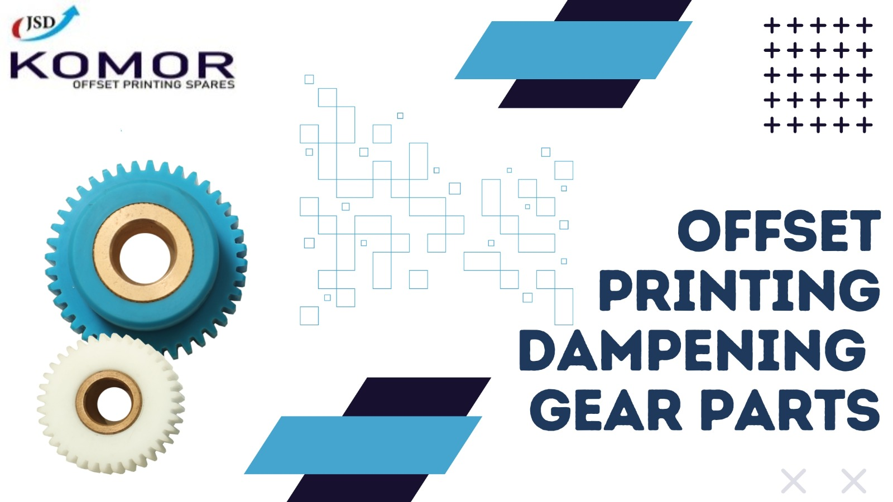

The Role of Offset Printing Dampener Parts in Enhancing Print Quality
Introduction
Getting perfect print quality is really important in the world of Offset printing. While many components contribute to the final result, one often-underestimated part is the offset printing dampener parts. These small components are essential in making every print look fantastic. Here, we will explore the significance of offset printing dampener parts and highlight how KOMOR, a leading manufacturer, is your best choice for top-quality offset replacement parts available 24/7.
Understanding Offset Printing Dampener Parts
Offset printing is a complex process that relies on the delicate balance between ink and water. The dampening system is responsible for supplying water to specific areas of the printing plate to repel ink and create the desired image on the paper. The key components of this system are the offset printing dampener parts, which include dampener rollers, brushes, and sleeves. These seemingly minor parts have a substantial impact on print quality.
1. Uniform Water Distribution
One of the primary functions of offset printing dampener parts is to ensure the even distribution of water across the printing plate. Any irregularities or inconsistencies can lead to unwanted streaks or blotches on the final print. Quality dampener parts from KOMOR guarantee precise water delivery, contributing to smooth and uniform prints.
2. Ink-Water Balance
Maintaining the delicate balance between ink and water is critical for print quality. Offset printing dampener parts help regulate this balance, preventing issues like over-inking or under-inking. This balance is vital for achieving sharp images and vibrant colors in your prints.
3. Reduced Print Defects
JLow-quality dampener parts can result in print defects such as ghosting, hickeys, and piling. These defects can be costly in terms of both time and materials. KOMOR's offset printing dampener parts are engineered to minimize such defects, ensuring your prints are consistently flawless.
4. Longevity and Durability
Using reliable and durable dampener parts is essential to avoid frequent replacements and downtime. KOMOR takes pride in manufacturing high-quality offset replacement parts that stand the test of time, reducing maintenance costs and increasing the lifespan of your printing equipment.
KOMOR: Your Trusted Source for Offset Printing Dampener Parts
When it comes to offset printing dampener parts, KOMOR is a name you can trust. As a leading manufacturer of offset printing spare parts, KOMOR provides a wide range of dampener parts designed for precision, reliability, and longevity. What sets KOMOR apart is their commitment to customer satisfaction, offering 24/7 availability for offset replacement parts to minimize disruptions in your printing operations. KOMOR understands that offset printing is a demanding industry, and any downtime can have a significant impact on your business. That's why they ensure round-the-clock availability of their high-quality offset printing dampener parts, ensuring you have the parts you need when you need them.
Why Invest in Komor’s Dampener Parts?
When it comes to offset printing dampener parts, KOMOR is a name you can trust. As a leading manufacturer of offset printing spare parts, KOMOR provides a wide range of dampener parts designed for precision, reliability, and longevity. What sets KOMOR apart is their commitment to customer satisfaction, offering 24/7 availability for offset replacement parts to minimize disruptions in your printing operations. KOMOR understands that offset printing is a demanding industry, and any downtime can have a significant impact on your business. That's why they ensure round-the-clock availability of their high-quality offset printing dampener parts, ensuring you have the parts you need when you need them. The significance of offset printing dampener parts cannot be overstated, and here's why investing in quality is a must:
1. Consistency:
Quality dampener parts ensure that your prints are consistently of high quality. Whether you're printing brochures, magazines, or marketing materials, maintaining uniform print quality is essential to leave a lasting impression on your clients.
2. Cost-Efficiency:
While quality dampener parts may come at a slightly higher initial cost, they save you money in the long run. Reliable parts mean fewer breakdowns, reduced maintenance, and lower replacement costs.
3. Reduced Downtime:
Imagine a scenario where your dampener parts fail during a crucial print job. The downtime and potential loss of business can be disastrous. Quality parts minimize such risks and keep your operations running smoothly.
4. Client Satisfaction:
Top-notch prints make your business shine, leading to happy customers who are inclined to return for future projects and refer your services to others.
5. Environmental Impact:
Quality dampener parts are designed to be efficient, reducing wastage of materials such as paper and ink. This not only saves you money but also contributes to a more sustainable printing process.
Conclusion:
Offset printing dampener parts may be small, but their impact on print quality is immense. Choosing high-quality parts from a reputable manufacturer like KOMOR ensures that your prints consistently meet the highest standards. Don't compromise on print quality; invest in KOMOR's offset printing dampener parts to elevate your printing game. With 24/7 availability and a commitment to excellence, KOMOR is your trusted partner in the world of offset printing. Elevate your print quality, reduce downtime, and enhance client satisfaction with top-notch dampener parts from KOMOR. Your prints deserve the best, and KOMOR delivers just that.
Frequently Asked Questions (FAQs)
Q. Why should I invest in high-quality dampener parts like those from KOMOR?
Investing in high-quality dampener parts ensures consistent print quality, reduces downtime due to breakdowns, and lowers maintenance and replacement costs in the long run. KOMOR, as a reputable manufacturer, provides durable and reliable parts with 24/7 availability, making them a wise choice for offset printing businesses.
Q. Are there any environmental benefits to using quality dampener parts?
Yes, quality dampener parts are designed to be efficient, reducing the wastage of materials such as paper and ink. This not only saves you money but also contributes to a more sustainable and eco-friendly printing process.
Q. How do low-quality dampener parts affect print quality?
Low-quality dampener parts can result in print defects such as streaks, blotches, ghosting, and uneven ink distribution. These defects can significantly impact the overall print quality and may lead to client dissatisfaction.
Q. What role does client satisfaction play in the printing business?
Client satisfaction is crucial in the printing industry. Happy customers tend to come back for more projects and are more inclined to refer your services to others. Maintaining high print quality, made possible by quality dampener parts, contributes to a positive reputation and long-term client relationships.